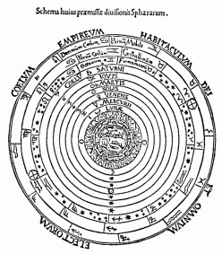

Otro gusto medieval (antiguo, en realidad) es el de las relaciones numéricas, los números vistos como símbolos… No se van a creer que de casualidad hay siete planetas (¿cómo ? ya va, ya va) y siete notas musicales. Para Honorio, por ejemplo:

… el mundo es una cítara, y cada
planeta una nota musical. La Luna el do, Mercurio el re, Venus el mi, el Sol el fa, Marte el sol, Júpiter el la, Saturno el si.
De la Tierra a la Luna hay, un tono. De la Luna a Mercurio, un semitono. De Mercurio a Venus, un semitono. De Venus al Sol, tres semitonos. Del Sol a Marte, un tono. De Marte a Júpiter, un semitono. De Júpiter a Saturno, un semitono. De Saturno a los signos del Zodíaco [que están sobre el firmamento, como veremos], tres semitonos. La suma son siete tonos, cada uno de los cuales tiene 15.625 millas, y cada semitono 7.812 millas y media, que corresponden a las distancias de los planetas entre sí. Así, pues, entre la Tierra y el firmamento hay 109.375 millas (unos 164.000 kilómetros). Por esto hay siete notas en la escala musical, nueve coros de ángeles y nueve musas [?].
Los planetas al rodar por sus órbitas producen una armonía maravillosa («cum dulcisona harmonia volvuntur, ac suavissimi concentus eorum circuitione efficiuntur»)., Pero nosotros no la percibimos, porque entre ellos y la Tierra se interpone el aire y porque resulta demasiado grande para nuestros oídos, que solamente pueden percibir los sonidos producidos en aquel.
Esta armonía celestial se refleja en las siete voces de la música y en las siete partes de que se compone el hombre, que es un microcosmos. (Su cuerpo consta de cuatro elementos, y su alma de tres potencias, que hacen un conjunto de siete.)
Está claro que la luna y el sol se cuentan como planetas.{kind=link}
De la Tierra a la Luna hay, un tono. De la Luna a Mercurio, un semitono. De Mercurio a Venus, un semitono. De Venus al Sol, tres semitonos. Del Sol a Marte, un tono. De Marte a Júpiter, un semitono. De Júpiter a Saturno, un semitono. De Saturno a los signos del Zodíaco [que están sobre el firmamento, como veremos], tres semitonos. La suma son siete tonos, cada uno de los cuales tiene 15.625 millas, y cada semitono 7.812 millas y media, que corresponden a las distancias de los planetas entre sí. Así, pues, entre la Tierra y el firmamento hay 109.375 millas (unos 164.000 kilómetros). Por esto hay siete notas en la escala musical, nueve coros de ángeles y nueve musas [?].
Los planetas al rodar por sus órbitas producen una armonía maravillosa («cum dulcisona harmonia volvuntur, ac suavissimi concentus eorum circuitione efficiuntur»)., Pero nosotros no la percibimos, porque entre ellos y la Tierra se interpone el aire y porque resulta demasiado grande para nuestros oídos, que solamente pueden percibir los sonidos producidos en aquel.
Esta armonía celestial se refleja en las siete voces de la música y en las siete partes de que se compone el hombre, que es un microcosmos. (Su cuerpo consta de cuatro elementos, y su alma de tres potencias, que hacen un conjunto de siete.)
Después viene el firmamento:
… está entre las aguas superiores e inferiores. Es esférico y de naturaleza acuosa, compuesto de agua congelada como cristal. Está tachonado de estrellas fijas, que no se ven por el día, porque las oculta la luz del Sol.
…y después está el cielo, primero el «cielo acuoso», y después
el «espiritual» (morada de los nueve coros angélicos,
y donde van los santos), y finalmente el
«caelum caelorum», donde habita Dios.
Estas cosas suelen traerse para hacer reír, no es mi intento (que no se enoje Fraile); aunque no les negaré el adjetivo de «pintorescas», también creo entrever la belleza y la grandeza de ese cosmos (imaginario, sí; pero acaso no en mayor medida que cualquier otro cosmos al uso humano).
Más bien me siento yo avergozado, al darme cuenta recién ahora de que lo denota la palabra «firmamento«, que yo tomaba como sinónimo literario de «cielo«: firmamento, claro, es la bóveda celeste, la superficie esférica giratoria donde están incrustadas («firmes») las estrellas. Los planetas, claro, no están en él.
Otra cosa a notar, que bien anota Fraile, es que el concepto de la «música celestial» estaba muy extendido; un lugar común de la época, diríamos. Y que está implícito en la cultura posterior, por ejemplo, algunos poemas de Fray Luis de León.